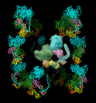

|  |
| (see Quicktime movie) |
The molecule model to copy (molmodel) is specified by model number, optionally preceded by #. This specification can be omitted from the sym command when there is only one molecule model. If sym-created copies of molmodel already exist, they will be replaced. The ~sym command without arguments closes all sym-created copies.
One application of sym is to facilitate symmetrical placement of copies of a structure (molecule model) within related volume data, usually a density map. In that case, the volume model should be specified as the reference coordinate system. After the structure has been placed approximately as desired in the density, sym can be used with update true to create copies that update automatically when the original model is moved. For example, see a Quicktime movie of myosin copies moving symmetrically.
For memory and display efficiency, the copies can be generated as low-resolution surfaces (from Multiscale Models) instead of atomic coordinates by specifying surfaces true. This may be helpful for large multimers. See also: play, msc
group symmetry
Specifications of symmetry are case-independent, and most types have additional sub-options or parameters:
- biomt (default) - use biological unit information, if any, in the molmodel input file
- symmetry of model #N - use biomt information from another molecule model or the symmetry assignment of a volume model
- Example: #4
- cage model polygon symmetry #N,pM or #N,pnM - place copies at equivalent positions relative to each M-sided polygon in the cage model with ID number N. The pM form places one copy per M-sided polygon, whereas pnM places M copies per M-sided polygon using CM symmetry about the center of the M-sided polygon nearest the original copy.
- Examples: #2,p6 or #2,pn5 (more...)
- cyclic symmetry Cn around axis and center
- Example: C3
- dihedral symmetry Dn around axis and center
- Example: d7
- tetrahedral symmetry T[,orientation] around center
where orientation can be:
- Example: t,z3
- 222 (default) - with two-fold symmetry axes along the X, Y, and Z axes, a three-fold along axis (1,1,1)
- z3 - a three-fold symmetry axis along Z, another three-fold axis in the YZ plane such that rotation about the X axis by ~110° is a symmetry operation (EMAN convention)
- octahedral symmetry O around center
- icosahedral symmetry I[,orientation] around center
where orientation can be:
- Example: i,n25
- 222 (default) - with two-fold symmetry axes along the X, Y, and Z axes
- 2n5 - with two-fold symmetry along X and 5-fold along Z
- n25 - with two-fold symmetry along Y and 5-fold along Z
- 2n3 - with two-fold symmetry along X and 3-fold along Z
- 222r - same as 222 except rotated 90° about Z
- 2n5r - same as 2n5 except rotated 180° about Y
- n25r - same as n25 except rotated 180° about X
- 2n3r - same as 2n3 except rotated 180° about Y
- helical symmetry H,rise,angle,n[,offset] around axis and center
where rise is the translation along the axis per subunit, angle is the rotation in degrees per subunit, and n is how many copies total (including the original) the resulting segment of infinite helix should contain prior to any filtering by contact or range. The integer offset (default 0) allows extending the helix in both directions. The example above would give n = 6 copies total, with two copies in the negative axis direction, one at the identity position, and three in the positive axis direction.
- Example: h,43.5,21,6,-2
- translational symmetry shift,n,distance along axis – or – shift,n,x,y,z
where n is how many copies total (including the original) the result should contain prior to any filtering by contact or range. The translation can be expressed as a distance along the axis or as a vector x,y,z in the reference coordinate system.
- Example: shift,3,26.7
- the product of symmetry groups, each specified as described above and separated by * to indicate multiplying each symmetry matrix of one group with each symmetry matrix of another; can be generalized to multiple symmetry groups (not just two)
- Example: c2*h,42,21,9,-4
axis axis
Specify axis of symmetry (default z), where axis can be:
- x - X-axis
- y - Y-axis
- z - Z-axis
- x,y,z (three values separated by commas only) - an arbitrary vector in the reference coordinate system
- an atom-spec of exactly two atoms (not necessarily bonded or in the same model) or one bond. A bond can only be specified by selecting it and using the word selected, sel, or picked; any atoms also selected at the time will be ignored.
center center
Specify center of symmetry (default 0,0,0), where center can be:
- x,y,z (three values separated by commas only) - an arbitrary point in the reference coordinate system
- an atom-spec of any combination of atoms and surface pieces. The center of the bounding sphere of the specified items will be used.
coordinateSystem N
Specify a reference model (default is the original molecule model, molmodel) by model number N preceded by #. The reference coordinate system is used for dynamic updating and for interpreting coordinate specifications such as of axis and center of symmetry.
biomtSet true | false
Whether to generate BIOMT matrices for molmodel according to the specified symmetry, replacing any pre-existing BIOMT information. The BIOMT matrices will be included if molmodel is subsequently saved as PDB.The accelerator mB (command ac mB) sets BIOMT matrices for molecule models associated with the currently selected multiscale chains to only the symmetries represented by those chains. This allows writing only a subset of the original BIOMT matrices (or symmetries assigned with sym).
update true | false
Whether to dynamically update the positions of the copies to preserve symmetry when the original model is moved relative to the reference coordinate system. If the reference model is closed, the copies will cease to update.
modelId N
Open the copy or copies as model number N (an integer, optionally preceded by #). The default is the lowest unused number. When multiple copies are loaded, they will be opened as submodels of the specified model. When only a single copy is loaded, it will not receive a submodel number unless a specification of the form #N.N (# required) is given instead of N.
contact contact-dist
Only generate copies with any atom within contact-dist of the original molecule model.
range range-dist
Only generate copies with centers within range-dist of the center of the original molecule model. A model's center is defined as the center of its bounding box.
occupancy f
Only generate copies at a fraction of the positions that would otherwise be filled. Random number generation is used to fill each position at a probability f (a value ranging from 0 to 1). This approach may yield different overall fractions filled for multiple uses of the same command, but distributed about f.
surfaces all | true | false [ resolution r ]
Whether to generate the additional copies as low-resolution surfaces (from Multiscale Models) instead of atomic coordinates. The surfaces may be preferred for large multimers because they require much less memory and are more efficient to display than atomic coordinates. The keyword all indicates making a surface for the original structure as well as for the additional copies. A low-resolution surface is created by counting the atoms in each cell of a 3D grid and then making an isosurface of this occupancy map. The resolution r is the grid spacing (default 8 Å). The isosurface is smoothed to reduce artifacts associated with using an arbitrarily aligned grid.
BIOMT matrices are included in some Protein Data Bank (PDB) entries, for example, 1fav. (The corresponding information in mmCIF format can also be used.) BIOMT matrices can be added to PDB files using a text editor or the command sym with biomtSet true.
The image shows twelve copies of myosin arranged helically, as specified by the following twelve matrices added to PDB entry 1i84 (the first is simply an identity matrix that does not specify an additional copy):
REMARK 350 BIOMOLECULE: 1 REMARK 350 APPLY THE FOLLOWING TO CHAINS: S, T, U, V, W, Z REMARK 350 BIOMT1 1 1 0 0 0 REMARK 350 BIOMT2 1 0 1 0 0 REMARK 350 BIOMT3 1 0 0 1 0 REMARK 350 BIOMT1 2 0 -1 0 0 REMARK 350 BIOMT2 2 1 0 0 0 REMARK 350 BIOMT3 2 0 0 1 0 REMARK 350 BIOMT1 3 -1 0 0 0 REMARK 350 BIOMT2 3 0 -1 0 0 REMARK 350 BIOMT3 3 0 0 1 0 REMARK 350 BIOMT1 4 0 1 0 0 REMARK 350 BIOMT2 4 -1 0 0 0 REMARK 350 BIOMT3 4 0 0 1 0 REMARK 350 BIOMT1 5 0.866025 -0.5 0 0 REMARK 350 BIOMT2 5 0.5 0.866025 0 0 REMARK 350 BIOMT3 5 0 0 1 145 REMARK 350 BIOMT1 6 -0.5 -0.866025 0 0 REMARK 350 BIOMT2 6 0.866025 -0.5 0 0 REMARK 350 BIOMT3 6 0 0 1 145 REMARK 350 BIOMT1 7 -0.866025 0.5 0 0 REMARK 350 BIOMT2 7 -0.5 -0.866025 0 0 REMARK 350 BIOMT3 7 0 0 1 145 REMARK 350 BIOMT1 8 0.5 0.866025 0 0 REMARK 350 BIOMT2 8 -0.866025 0.5 0 0 REMARK 350 BIOMT3 8 0 0 1 145 REMARK 350 BIOMT1 9 0.866025 0.5 0 0 REMARK 350 BIOMT2 9 -0.5 0.866025 0 0 REMARK 350 BIOMT3 9 0 0 1 -145 REMARK 350 BIOMT1 10 -0.5 0.866025 0 0 REMARK 350 BIOMT2 10 -0.866025 -0.5 0 0 REMARK 350 BIOMT3 10 0 0 1 -145 REMARK 350 BIOMT1 11 -0.866025 -0.5 0 0 REMARK 350 BIOMT2 11 0.5 -0.866025 0 0 REMARK 350 BIOMT3 11 0 0 1 -145 REMARK 350 BIOMT1 12 0.5 -0.866025 0 0 REMARK 350 BIOMT2 12 0.866025 0.5 0 0 REMARK 350 BIOMT3 12 0 0 1 -145